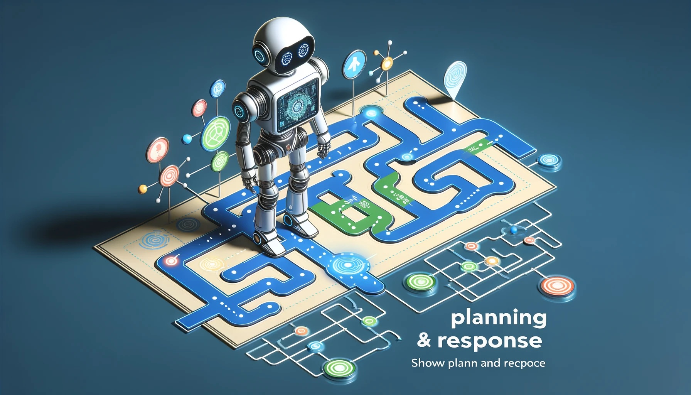
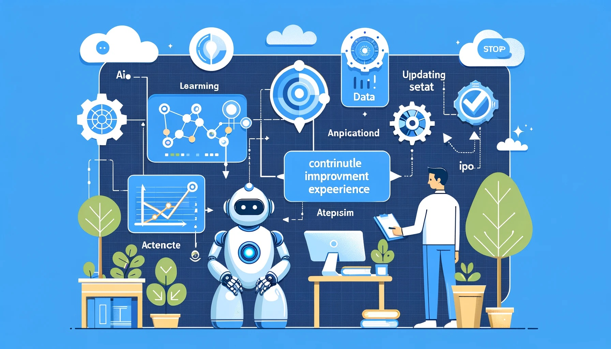
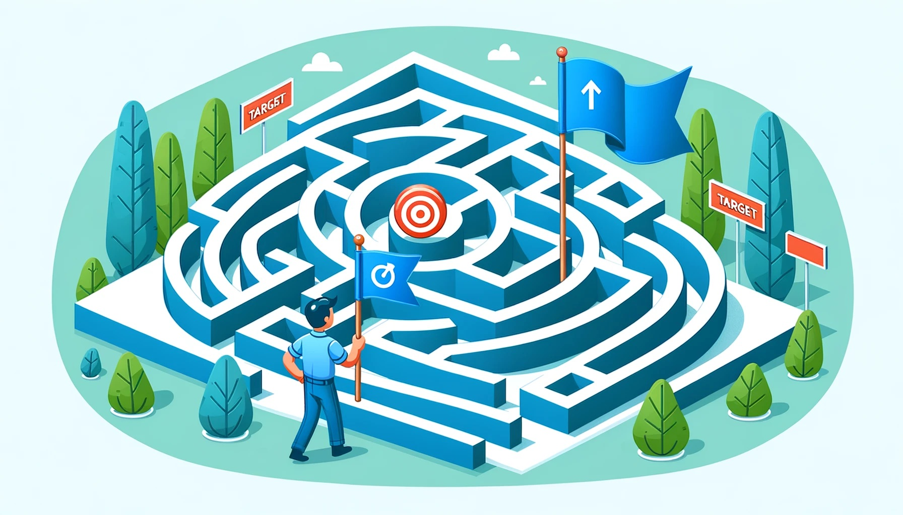

AI 에이전트#
AI 에이전트의 정의와 생성적 에이전트#
AI 에이전트의 정의#
{kind=link}
AI 에이전트는 환경을 인식하고, 그 환경에 영향을 미치며, 목표를 달성하기 위해 설계된 컴퓨터 기반 엔티티
기본 기능
의사결정 수행
문제 해결
상호작용(다른 에이전트나 인간과의)
구성 요소
센서: 환경에서 정보 수집
효과기: 환경에 영향을 미침
지식 베이스: 에이전트가 알고 있는 정보 저장
추론 엔진: 결정 내림
생성적 에이전트#

인간의 행동을 상호작용적이고 설득력 있게 모방할 수 있는 고급 컴퓨터 도구
특징
기억, 검색, 반영, 상호작용 능력 보유
변화하는 환경에 지속적으로 적응
인간 대리인으로 다양한 분야에 응용 가능
응용 분야
고객 서비스 대표
온라인 교육 플랫폼
게임 내 비플레이어 캐릭터(NPC)
차별점
전통적 규칙 기반 AI와 달리 동적 상호작용 능력
스크립트에 의존하지 않고, 독자적 문제 해결
계획 및 반응#
{kind=link}
계획:
미래의 행동 시퀀스를 생성하여 에이전트의 행동을 일관되게 유지합니다
상위 수준에서 시작하여 점차 세부적인 내용을 추가하는 방식으로 계획을 수립합니다
반응:
주변 세계를 인식하고 기존 계획을 계속할지, 새로운 관찰에 반응할지를 결정합니다
필요한 경우 새로운 계획을 생성하고 다른 에이전트와의 대화를 시작할 수 있습니다.
AI 에이전트의 특성#
자율성 (Autonomy)#
{kind=link}
AI 에이전트는 인간의 지속적인 개입 없이 독립적으로 작업을 수행할 수 있는 능력
자율 주행 차량이 도로 상황을 인식하고, 장애물을 피해 목적지까지 스스로 운전
에이전트가 복잡한 환경에서 독립적으로 문제를 해결할 수 있게 함
기술적 기반: 센서와 알고리즘을 통한 환경 인식 및 의사결정
응용 분야: 자동화된 고객 서비스, 스마트 홈 관리 시스템 등
인식 (Perception)#

다양한 센서를 통해 환경을 감지하고 해석하는 에이전트의 능력
스마트 홈 시스템이 음성 명령을 인식하여 조명과 온도 조절
에이전트가 환경의 변화를 정확하게 인지하고 적절히 반응하는 데 필수적
기술적 기반: 카메라, 마이크 등의 센서와 데이터 처리 알고리즘
응용 분야: 음성 인식, 이미지 분석, 환경 모니터링 등
반응성 (Reactivity)#

환경의 변화에 대해 신속하게 반응하고 조치를 취하는 에이전트의 능력
챗봇이 사용자 질문에 즉각적으로 답변 제공
실시간으로 환경 변화에 대응하며 목표 달성을 위한 조치를 취함
기술적 기반: 이벤트 기반 프로그래밍 및 조건-반응 규칙
응용 분야: 실시간 모니터링 시스템, 긴급 대응 시스템 등
추론 및 의사결정 (Reasoning and Decision-making)#

데이터 분석과 목표 달성을 위한 결정 내리기
의료 AI가 환자 데이터를 분석하여 진단 및 치료 계획 수립
복잡한 데이터를 기반으로 최적의 조치를 선택함
기술적 기반: 데이터 마이닝, 패턴 인식, 기계 학습 알고리즘
응용 분야: 질병 진단, 금융 분석, 리스크 관리 등
학습 (Learning)#

경험을 통해 성능을 향상시키고 새로운 상황에 적응하는 에이전트의 능력
추천 시스템이 사용자의 선호도를 학습하여 맞춤형 추천 제공
환경의 변화에 적응하고 효율성을 지속적으로 개선함
기술적 기반: 심층 학습, 강화 학습, 전이 학습 등의 기법
응용 분야: 개인화된 서비스, 자동화된 의사결정 시스템 등
커뮤니케이션 (Communication)#

다른 에이전트나 인간과의 정보 교환 및 상호작용 능력
음성 인식 비서가 사용자의 명령을 받아 실행
협업, 정보 공유, 사용자와의 상호작용을 가능하게 함
기술적 기반: 자연어 처리, 음성 인식 기술
응용 분야: 인터랙티브 인공지능, 팀워크 지원 시스템 등
목표 지향성 (Goal-oriented)#

명확한 목표를 가지고 그 목표를 달성하기 위해 설계된 에이전트
온라인 고객 지원 에이전트가 문제 해결을 목표로 활동
에이전트의 작업과 활동에 방향성과 목적을 제공함
기술적 기반: 목표 설정 및 달성을 위한 알고리즘과 전략
AI 에이전트의 구조#
환경 (Environment)#

AI 에이전트가 작동하는 영역 또는 도메인
에이전트가 수행할 작업의 조건과 범위를 결정함
물리적 공간(공장 바닥), 디지털 공간(웹사이트)
에이전트와의 상호작용: 환경은 에이전트의 센서와 액추에이터를 통해 영향을 받고 영향을 미침
다양성: 다양한 환경에서의 작동 능력이 에이전트의 유연성을 증가시킴
센서 (Sensors)#

환경에서 정보를 수집하는 도구
기능: 환경 감지와 정보 수집
카메라(시각), 마이크(청각)
정보 처리: 수집된 정보는 의사결정 메커니즘으로 전송됨
응용: 환경 변화에 대응하기 위한 데이터 제공
액추에이터 (Actuators)#
{kind=link}
환경에 영향을 미치는 도구
역할: 특정 작업 수행 및 환경 조작
로봇 팔(물리적 조작), 스피커(음성 출력)
작업 실행: 의사결정 메커니즘의 지시에 따라 작동
효과: 환경에 대한 구체적인 변경 사항을 생성
의사결정 메커니즘 (Decision-making Mechanism)#

AI 에이전트의 ‘두뇌’로, 수집된 정보를 처리하고 조치를 결정
기술: 다양한 의사결정 알고리즘(규칙 기반, 전문가 시스템, 신경망)
과정: 정보 처리 → 문제 해결 → 조치 결정
응용: 효율적인 작업 수행 및 목표 달성
AI 에이전트의 핵심 기능 및 효율성 결정
학습 시스템 (Learning System)#
{kind=link}
개요: 경험을 통한 성능 향상 시스템
기술: 강화 학습, 지도 학습, 비지도 학습 등
향상 방법: 시간에 따른 에이전트의 성능 개선
적응 능력: 환경 변화에 따른 에이전트의 유연한 대응
응용: 개인화된 서비스, 효율적인 문제 해결 전략 개발 등
AI 에이전트의 유형#
단순 반사 에이전트(Simple Reflex Agent)#

사전에 정의된 규칙을 따라 현재 상황에만 반응하는 AI 시스템
작동 원리:
조건-행동 규칙에 따라 행동 결정
현재 인식만을 기반으로 결정
장점:
간단한 설계 및 구현
실시간 반응 가능
신뢰성 높음(정확한 입력 센서와 규칙이 있는 경우)
단점:
입력 오류에 취약
기억력 또는 상태 유지 불가
모델 기반 반사 에이전트(Model-based Reflex Agent)#

현재 인식과 내부 상태를 모두 고려하여 행동을 결정하는 AI 시스템
작동 원리:
내부 상태를 사용해 조건을 평가
세계에 대한 모델을 기반으로 결정
장점:
환경 변화에 적응 가능
복잡한 의사 결정 가능
단점:
계산 비용 높음
모델의 정확도 문제
목표 기반 에이전트(Goal-based Agents)#
{kind=link}
특정 목표를 달성하기 위해 환경에서 정보를 사용하는 AI 에이전트
작동 원리:
목표 달성을 위해 최적의 경로 탐색
검색 알고리즘과 휴리스틱 사용
장점:
특정 목표 달성에 효율적
다양한 응용 가능
단점:
한정된 목표에만 초점
환경 변화에 유연하지 않음
유틸리티 기반 에이전트(Utility-based Agents)#

최대 유틸리티를 극대화하는 결정을 내리는 AI 에이전트
작동 원리:
기대 유틸리티를 평가하여 최적의 행동 선택
복잡하고 불확실한 상황에서 유연한 대처
장점:
다양한 의사 결정 문제 해결 가능
경험 학습 및 전략 조정
단점:
환경 모델의 정확성 필요
계산 비용 높음
학습 에이전트(Learning Agents)#

경험에서 학습하여 성능을 개선하는 소프트웨어 에이전트
작동 원리:
환경과의 상호작용을 통한 학습
성능 평가 및 행동 수정
장점:
시간이 지남에 따라 진화 및 적응
유틸리티 측정을 통한 현실적 결정 지원
단점:
편향된 결정 가능성
높은 개발 및 유지 비용
계층적 에이전트(Hierarchical Agents)#

계층 구조에서 상위 에이전트가 하위 에이전트를 감독하는 구조의 AI 에이전트
작동 원리:
작업을 계층적으로 조직 및 할당
복잡한 시스템의 효율적 관리
장점:
자원의 효율적 사용
명확한 커뮤니케이션 및 작업 분배
단점:
계층 구조의 복잡성
고정된 계층으로 인한 적응성 제한